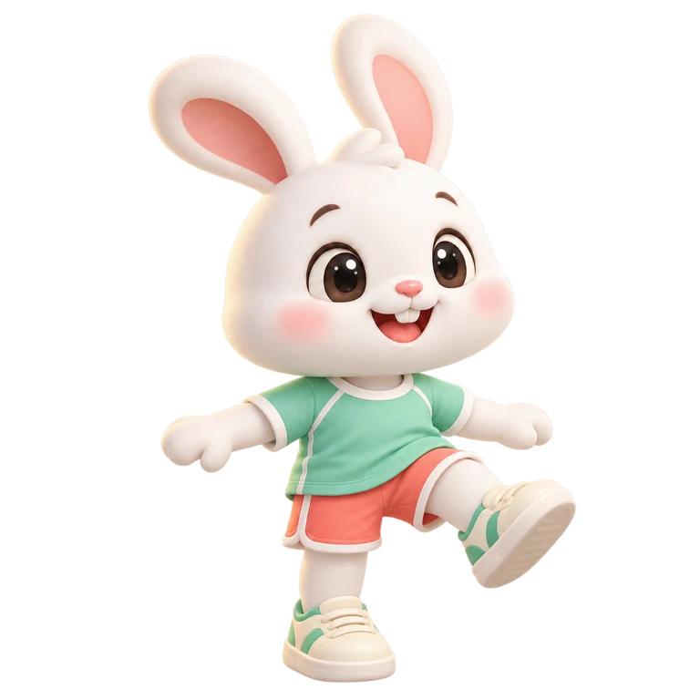

🪁 전통놀이
딱지치기 · 잣치기 · 구슬치기
제기차기 · 연날리기 · 비석치기

토끼와 제기차기카메라로 발 들기 · 앉아서 참여하기
버튼으로도 연습할 수 있어요.제기차기 시작 →
버튼으로도 연습할 수 있어요.제기차기 시작 →
다른 전통놀이는 준비 중입니다.
놀이 방법을 배우고, 내 방식으로 함께 참여해요.
딱지치기 · 잣치기 · 구슬치기
제기차기 · 연날리기 · 비석치기

다른 전통놀이는 준비 중입니다.
체스 · 장기 · 바둑 · 오목 · 오셀로
말의 움직임을 익히고 한 수씩 생각해요.
바둑은 준비 중입니다.
다트 · 우주 도시 건설 · 주차 빼기
함께 계획하고 문제를 풀어요.
다른 보드게임은 준비 중입니다.